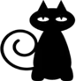

MiaouNetLes chats sur internet : un phénomène intemporel
 sondage
sondage
Depuis les tout premiers forums des années 1990 jusqu'aux réseaux sociaux actuels, une règle tacite semble régir Internet : les chats en sont les véritables propriétaires. Qu'il s'agisse d'une simple photo floue, d'un GIF pixélisé ou d'une vidéo virale vue des centaines de millions de fois, les félins occupent une place à part dans la culture numérique mondiale. Sur MiaouNet, explorez l'histoire de cette fascination collective, des premiers mèmes fondateurs aux nouvelles stars de TikTok et d'Instagram.
Pourquoi les chats sont-ils si populaires sur Internet ?
Un miroir parfait de nos émotions : Contrairement au chien, dont l'attitude cherche souvent à plaire, le chat affiche un visage stoïque, blasé ou perpétuellement surpris. Cette neutralité apparente en fait une toile vierge idéale sur laquelle les internautes projettent leurs propres humeurs : la fatigue du lundi matin, l'incompréhension face à un cours difficile ou l'agacement quotidien.
Le contraste entre grâce et maladresse : Capable de sauter avec une précision chirurgicale à deux mètres de hauteur, le chat est tout aussi capable de rater un bond de trente centimètres ou de rester coincé dans une boîte en carton trop petite. Ce décalage permanent entre élégance naturelle et chaos imprévisible en fait une source inépuisable d'humour.
Un langage universel et participatif : Dès 2007, avec l'explosion des LOLcats (des photos de chats accompagnées de légendes humoristiques), le félin est devenu un outil de communication à part entière. Pas besoin de parler la même langue pour comprendre l'expression d'un chat face à une assiette de salade : le mème félin dépasse toutes les barrières culturelles et se partage instantanément.
-
Un refuge apaisant face au flux d'actualités : Des études en psychologie numérique ont montré que regarder quelques secondes de vidéos de chats diminue le stress et procure un regain d'énergie positive. Au milieu d'un web parfois anxiogène, ces contenus courts jouent le rôle d'une pause réconfortante accessible en un clic.
Que découvrir sur le site ?
Parcourez la frise ci-dessus pour remonter aux débuts du phénomène, redécouvrir les félins les plus iconiques qui ont marqué l'histoire du web, ou explorer les nouveaux mèmes qui animent les réseaux aujourd'hui. N'hésitez pas non plus à partager votre propre expérience et à nous parler de vos compagnons à quatre pattes via notre sondage en haut à droite !